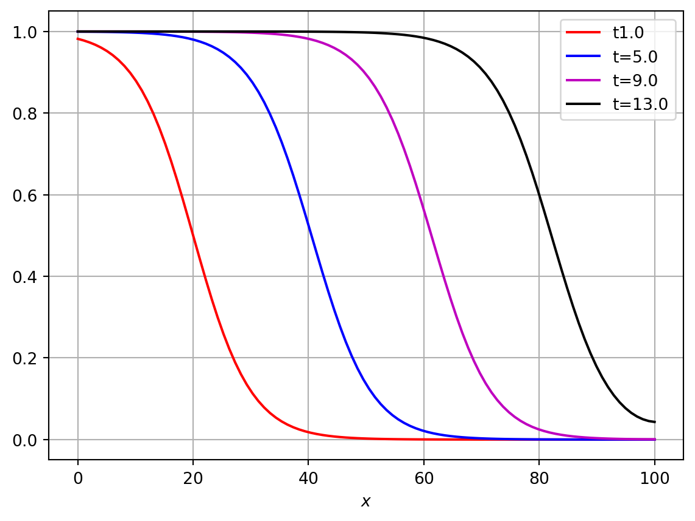
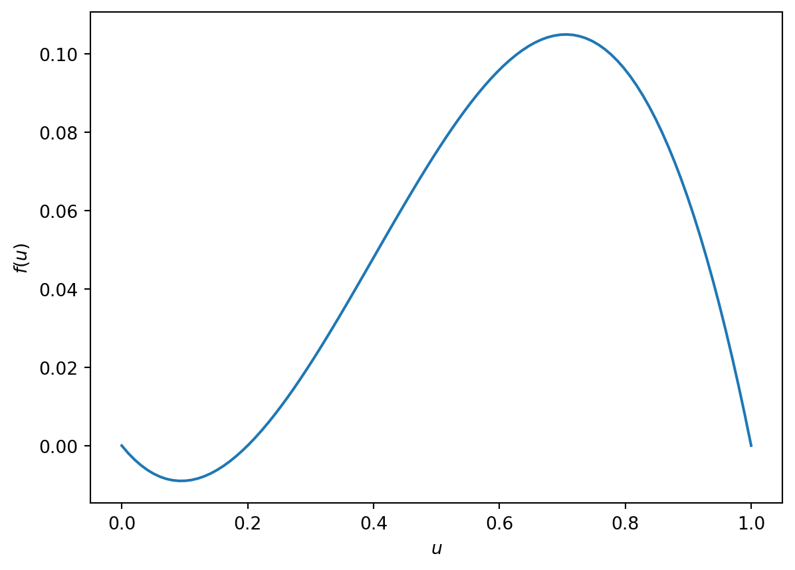
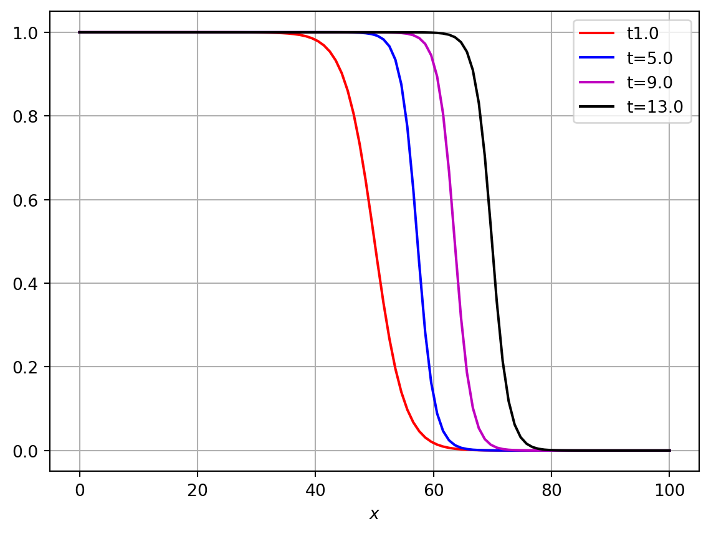
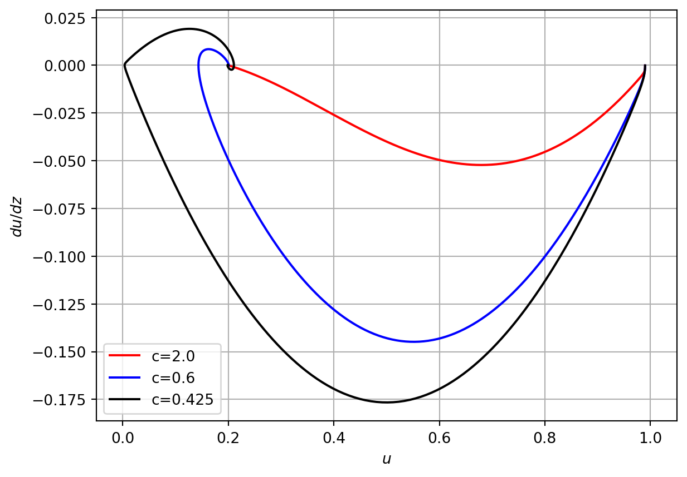

We now consider the one-dimensional diffusion equation with a non-linear reaction term of ``logistic growth’’, to give the nonlinear reaction-diffusion equation:
This is known as the Fisher equation, and was introduced by Fisher in \(1937\) to investigate the speed of an advantageous (mutant) gene in a population “The Wave of Advance of Advantageous Genes” (1937).
We can non-dimensionalize Equation eq-fisher by considering the scaling \[t^\ast = \rho t, \quad x^\ast = \sqrt{\dfrac \rho D} x, \quad u^\ast = \displaystyle{\frac u K}.
\] Dropping the asteriks we obtain the non-dimensionalized Fisher equation (Exercise):
In Figure fig-logisticpde we have computed a numerical solution to Equation eq-fisher_1 together with no-flux boundary conditions. See Python code for further details. The key point to note is that the numerical solutions appear to be a travelling wave, at successive times the solution is translated along the \(x\) axis. At long times the solution tends to \(u\sim1\) (behind the wavefront). Ahead of the front, the solution is \(u\sim0\).
Can we prove this is a travelling wave (e.g. the solution could be dynamic on a very slow time scale that is not captured by the numeircal solution)?
Can we derived a form for the travelling wave profile?
Will we see a travelling wave for any initial data?
How does the wave speed relate to model parameters?
import numpy as npfrom scipy.integrate import odeintimport matplotlib.pyplot as pltT=100L=100N_x=100N_t=100t=np.linspace(1,T,N_t)x=np.linspace(0,L,N_x)u_0=0.5*(1+np.tanh(-0.1*(x-20)))dx=L/(N_x-1)dt=T/(N_t-1)def logisticPDErhs(u,t): N_x=len(u) f=np.zeros_like(u)for i inrange(1,N_x-1): f[i]=1/dx**2*(u[i-1]-2*u[i]+u[i+1])+u[i]*(1-u[i]) i=0 f[i]=1/dx**2*(-u[i]+u[i+1])+u[i]*(1-u[i]) i=N_x-1 f[i]=1/dx**2*(u[i-1]-u[i])+u[i]*(1-u[i]) return f sol=odeint(logisticPDErhs,u_0,t)plt.plot(x, sol[0,:], 'r')plt.plot(x, sol[4,:], 'b')plt.plot(x, sol[8,:], 'm')plt.plot(x, sol[12,:], 'k')plt.legend(['t'+str(t[0]),'t='+str(t[4]),'t='+str(t[8]),'t='+str(t[12])])plt.xlabel('$x$')plt.grid()plt.show()

Figure 3.1: Numerical solution of logistic PDE
3.2 Travelling waves
It is known that the Fisher Equation eq-fisher_1 exhibits what are known as travelling wave solutions.
Definition 3.1 A travelling wave is a solution of a partial differential equation with a constant profile (shape) and a constant propagation speed.
3.2.1 Types of travelling waves
Travelling pulse: \(u(x,t) \to a\), as \(x \to \pm \infty\).
Travelling front : \(u(x,t) \to a\), as \(x \to - \infty\), \(u(t,x) \to b\), as \(x \to + \infty\) and \(a\neq b\) (this is what we see in Figure fig-logisticpde)
Travelling train: \(u(x,t)\) is a periodic function in \(x\).
A travelling wave solution of a PDE can be written in the form \(u(x,t) = W(z)\), where \(z = x - vt\). We shall consider \(v>0\), which describes a wave moving from left to right.
Consider first the spatially uniform (homogeneous) solution of Equation eq-fisher_1
Steady states of Equation eq-fisher_unif are \(u_1 =1\) and \(u_2 =0\). To analyse the stability we consider \[
f(u)=u(1-u) \quad \textrm{and} \quad \frac{ df}{du}(u)= 1 - 2u
\] Then \[
\frac{ df}{du}(u_1)= -1 \quad \textrm{and} \quad \frac{ df}{du}(u_2)= 1
\] Thus \(u_1=1\) is stable and \(u_2=0\) is unstable.
This stability analysis suggest that for the spatially dependent situation we can have a travelling wave solution which connects the two steady states \(u_1\) and \(u_2\) i.e. a travelling front.
Considering the travelling wave ansatz \[
u(x,t)= W(z) = W(x-vt)
\] in Equation eq-fisher_1 and using
we obtain a second order ordinary differential equation for \(W\)
\[
\frac{ d^2W}{dz^2}+ v \frac{ dW}{dz} + W(1-W) = 0,
\tag{3.4}\]\[
W(z) \to 1 \quad \text{ as } \quad z \to - \infty, \quad
W(z) \to 0 \quad \text{ as } \quad z \to +\infty
\tag{3.5}\]
\[
W(z) \in [0,1].
\tag{3.6}\]
We can rewrite Equation eq-tw_eq as a system of two firest order ODEs
\[
\begin{eqnarray}
\begin{aligned}
& \frac{ dW}{dz} = P & = F(W,P) , \\
& \frac{ d P}{dz}= - v P - W(1-W) & = G(W,P),
\end{aligned}
\end{eqnarray}
\tag{3.7}\]
3.2.2 Numerical solutions
In Figure fig-fishernumtravwave we plot the numerical solution to equations Equation eq-tw_eq_2 for different values of the wavespeed \(v\). Note that when the wavespeed is too small the solution spirals in towards the origin. This solution cannot be valid as it implies that \(u<0\) for some \(z\).
Note that some problem will not have a travelling wave solution. In this situation we could still make the travelling wave ansatz but this would usually result in a contradiction. This tells us that a travelling wave solution is not possible.
Figure 3.2: Proposed numerical solution of Equation eq-tw_eq_2 with prospective values of wavespeed \(c\).
3.2.3 Steady state analysis
The steady states of Equation eq-tw_eq_2 are \((W_1, P_1) = (0,0)\) and \((W_2, P_2) = (1,0)\).
Using \[
\frac{dP}{dW} = \frac{dP}{dz} \frac{dz}{dW} =\frac{ \frac{dP}{dz}}{ \frac{dW}{dz}}
\] and Equation eq-tw_eq_2 we can write an equation for \(P=P(W)\): \[
\frac{ dP}{dW} = - v - \frac{ W(1-W)} P,
\tag{3.8}\]
together with \[
P(0) = 0, \quad P(1) = 0,
\tag{3.9}\] and \[
P(W) < 0 \quad \textrm{or} \quad W \in (0,1).
\tag{3.10}\]
The condition Equation eq-tw_eq_3_c is given by the form of travelling front, which we would like to show that it exists
Lemma 3.1 For every solution of Equation eq-tw_eq satisfying Equation eq-tw_bc and Equation eq-tw_r we have that \(\dfrac{dW(z)}{dz} <0\) for all finite \(z\), i.e. \[
P(W) < 0 \quad \mathrm{for} \quad W \in (0,1).
\]
Thus in phase-plane we shall look for a trajectory connecting \((W_1, P_1)=(0,0)\) and \((W_2, P_2) = (1,0)\) and \(P<0\).
3.2.4 Connection between sign of \(P\) and sign of speed \(v\)
Consider equation Equation eq-tw_eq_3. Multiplying it by \(P\) and integrating over \(W\) from \(0\) to \(1\), we obtain \[
\int_0^1 \frac{dP}{dW} P(W)\, dW = - v \int_0^1 P(W) dW - \int_0^1 W(1-W) dW
\] Using conditions Equation eq-tw_eq_3_bc we have \[
\int_0^1 \frac{dP}{dW} \, P\, dW = \frac 12 \int \frac{d}{dW} (P^2) dW = \frac 12\left( P^2(1) - P^2(0)\right) = 0
\] and \[
v \int_0^1 P(W) dW= - \int_0^1 W(1-W) dW <0, \quad \text{ since } \int_0^1 W(1-W) dW >0 \; .
\] Thus for \(v>0\) we have \(P= W^\prime<0\) and for \(v<0\) we have \(P= W^\prime>0\).
Note: \(u(x,t) = W(z)\), where \(z= x- vt\) with \(v<0\) and \(\frac{ dW}{dz} >0\) will also be a travelling wave for the Fisher Equation eq-fisher_1, i.e. a travelling wave front moving to the left.
Note: Instead of \(z = x - vt\) we can also consider \(z=x+ vt\) . The sign of \(v\) determines the direction of movement: If \(z = x - vt\) for \(v>0\) we have travelling wave moving to the right and for \(v<0\) we have travelling wave moving to the left.
If \(z = x + vt\) for \(v>0\) we have travelling wave moving to the left and for \(v<0\) we have travelling wave moving to the right.
3.2.5 Stability of steady states
The Jacobian matrix for Equation eq-tw_eq_2 is given by: \[
J(W,P) = \begin{pmatrix}
\frac{\partial F}{\partial W} & \, \frac{\partial F }{\partial P}\\
\frac{\partial G }{\partial W} & \, \frac{\partial G }{\partial P}
\end{pmatrix} =
\begin{pmatrix}
0 & \, 1\\
-1 + 2W & \, - v
\end{pmatrix}
\]
At \((W_1, P_1)=(0,0)\) the eigenvalues of \(J(0,0)\) are solutions of the characteristic polynomial \[
\det(J(0,0) - \lambda I) = \begin{vmatrix} -\lambda & \, 1\\
- 1 & \, -v - \lambda
\end{vmatrix} = \lambda^2 + v \lambda + 1 = 0.
\] Thus \[
\lambda^{\pm}_1 = \frac 12 ( - v \pm \sqrt{ v^2 - 4})
\] and we have for \(v>0\) that \({R} e(\lambda_1^\pm) <0\).
Therefore at \((0, 0)\)\[
\begin{cases}
\text{ stable node if }\, v^2 \geq 4, \\
\text{ stable focus if } \, v^2 \leq 4 \quad (\text{ complex eigenvalues})
\end{cases}
\] At \((W_2, P_2)=(1,0)\) eigenvalues of \(J(1,0)\) are solutions of the characteristic polynomial \[
\det(J(1,0) - \lambda I) = \begin{vmatrix} -\lambda & \, 1 \\
1 & \, -v - \lambda
\end{vmatrix} = \lambda^2 + v \lambda - 1 = 0 .
\] Thus \[
\lambda^{\pm}_2 = \frac 12 ( - v \pm \sqrt{ v^2 + 4})
\] and we have for \(v>0\) that \(\lambda_2^{-} <0 < \lambda_2^+\). Therefore \((1,0)\) is a saddle.
The eigenvectors are defined by \[
- \lambda W + P = 0.
\] Thus at \((W_1, P_1)=(0,0)\) we have \[
\Phi_1 = \begin{pmatrix}
W\\
\lambda_1^- W
\end{pmatrix}, \quad \Phi_2 = \begin{pmatrix}
W\\
\lambda_1^+ W
\end{pmatrix}.
\]
Consider that \[
\lambda_1^- \leq \lambda_1^+ <0 \quad \textrm{and choose} \quad W = \pm 1.
\]
At \((W_2, P_2)=(1,0)\) we have \[
\Psi_1 = \begin{pmatrix}
W\\
\lambda_2^- W
\end{pmatrix}, \quad \Psi_2 = \begin{pmatrix}
W\\
\lambda_2^+ W
\end{pmatrix}.
\]
Consider that \[
\lambda_2^- <0 < \lambda_2^+ \quad \textrm{and choose} \quad W = \pm 1.
\] The eigenvectors are sketched in the figure below.
Definition 3.2 The trajectory that connects two different points is called a heteroclinic connection. The trajectory that connects a point with itself is called a homoclinic connection.
3.2.6 Minimal wave speed
It can be shown that for \(v<2\) a heteroclinic connection between \((0,0)\) and \((1,0)\) exists, but in this situation the steady state \((0,0)\) is a stable focus and corresponds to an oscillatory front.
In the context of a model of a biological process \(W\) is the profile of a population density and \(W\geq 0\). Hence, for \(v<2\) trajectories connecting \((0,0)\) and \((1,0)\) are not biologically realistic.
Thus we obtain the minimal speed \(v^\ast_\text{min}=2\) (non-dimensionalized) for which we have a travelling wave front solution for Fisher’s equation.
In the original dimensional variables we have: \[
z^\ast= x^\ast - v^\ast t^\ast = x \sqrt{ \frac \rho D} - v^\ast t \rho , \quad
\sqrt{ \frac D \rho } z^\ast= x - \sqrt{D \rho} \, v^\ast\, t.
\] Thus for \(z = x - vt\) we have \[ v= v^\ast \sqrt{D \rho}\] and \[
v_{\text{min}}= v^\ast_{\text{min}} \sqrt{D \rho} = 2 \sqrt{D \rho}.
\]
3.2.6.1 The existence of a confined region
To show the existence of a travelling wave we will construct a confined region or confined set in \(\mathbb{R}^2\), which contains both steady states such that, once inside this region solution trajectories cannot escape from it (also known as an invariant region or invariant set).
Consider \[
T= \{ (W,P) : \, 0 \leq W \leq 1,\, \, P \leq 0, \, \, P \geq \mu W \}
\] for some \(\mu <0\).
Consider normal vectors at each boundary of \(T\): \[
\begin{eqnarray*}
\text{ at } P = 0 \, : \, \, n_1 = \begin{pmatrix}
0 \\ -1
\end{pmatrix}, \quad
\text{ at } W= 1 \, : \, \, n_2 = \begin{pmatrix}
-1\\ 0
\end{pmatrix}, \quad
\text{ at } P = \mu W \, : \, \, n_3 = \begin{pmatrix}
-\mu \\1
\end{pmatrix}.
\end{eqnarray*}
\] Consider the scalar product between normal vectors and the flow vector\[
\begin{pmatrix}
\dfrac{ dW}{dz} \\ \\ \dfrac{dP}{dz}
\end{pmatrix},
\] of Equation eq-tw_eq_2.
At \(P=\mu W\)\[
\begin{eqnarray*}
\begin{pmatrix}
\dfrac{ dW}{dz} \\ \\ \dfrac{dP}{dz}
\end{pmatrix} \cdot n_3 = \begin{pmatrix}
\dfrac{ dW}{dz} \\ \\ \dfrac{dP}{dz}
\end{pmatrix}\cdot \begin{pmatrix}
-\mu \\ 1
\end{pmatrix} =\left( - \mu P - vP - W(1-W)\right) \Big|_{P=\mu W} \\= - \mu^2 W - \mu v W - W(1-W) = - W( \mu^2 + \mu v + 1) + W^2.
\end{eqnarray*}
\] Thus
\[
\begin{pmatrix}
\dfrac{ dW}{dz} \\ \\ \dfrac{dP}{dz}
\end{pmatrix} \cdot n_3 \geq 0,
\] if \[
\mu^2 + \mu v + 1 \leq 0.
\] The last inequality is satisfied if we have real roots of the equation \(\mu^2 + \mu v + 1 = 0\). We have that
Thus, since \(v >0\), for \(v \geq 2\) and any \[
\mu\in \left[ \dfrac{ - v -\sqrt{ v^2 -4}} 2, \dfrac{ - v +\sqrt{ v^2 -4}} 2 \right]
\] we have \[
\begin{pmatrix}
\dfrac{ dW}{dz} \\ \\ \dfrac{dP}{dz}
\end{pmatrix} \cdot n_3 \geq 0 \qquad \text{ at } \quad P=\mu W.
\]
Therefore we have shown that at the boundaries of \(T\) the flow vector points in to the region \(T\) and any trajectory approaching the boundaries from inside of \(T\) will return to \(T\) without crossing any of the boundaries of \(T\). Thus we have constructed an invariant (trapping) triangular region containing the steady states \((0,0)\) and \((1,0)\).
If we can show that there no other steady states or periodic solutions of the system Equation eq-tw_eq_2, then a trajectory that leaves \((1,0)\) must approach \((0,0)\).
If there exists a function \(\varphi(W,P)\), with \(\varphi \in C^1(\mathbb R^2)\), such that \[
\frac{\partial(\varphi F )}{\partial W} + \frac{\partial(\varphi G )}{\partial P},
\]
has the same sign \((\neq 0)\) almost everywhere in a simply connected region (region without holes), then the system \[
\begin{eqnarray*}
&& \dfrac{ dW}{dz} = F(W,P) \; ,
\\ && \dfrac{dP}{dz} = G(W,P),
\end{eqnarray*}
\] has no periodic solutions in this region.
We can apply Theorem thm-bendixson to our situation taking \(\varphi(W,P) = 1\). Then using Equation eq-tw_eq_2 we have \[
\frac{\partial(\varphi F )}{\partial W} + \frac{\partial(\varphi G )}{\partial P} = - v < 0\; .
\] Thus we have no periodic solutions and also only two steady states \((0,0)\) and \((1,0)\) in the confined (invariant) simply-connected region \(T\). Therefore the trajectory that leaves \((1,0)\) will approach \((0,0)\).
We have therefore shown that for any \(v\geq 2\) there exist a heteroclinic trajectory \(P(W)\) connecting \((0,0)\) and \((1,0)\).
Thus for any wave speed \(v\) satisfying \(v \geq 2\), we have the existence of travelling wave front \(u(x,t)= W(x- vt)\) of Fisher’s equation Equation eq-fisher_1.
3.2.7 Initial conditions
One final key question is: For which initial conditions \(u(x,0) = u_0(x)\) does the solution evolve to a travelling wave solution?
If we start with a travelling wave shape initial condition, i.e. \(u_0(x)= W(z)|_{t=0} = W(x)\), then this simply propagates as a travelling wave. However if \(u_0(x)\neq W(x)\), then it is not immediately obvious how the solution will evolve. This problem was considered by Kolmogorov et al. Kolmogorov, Petrovsky, and Piskunov (1937), who showed that for any initial data satisfying \[
u_0(x) \geq 0, \quad \text{ with} \quad u_0(x) = \begin{cases} 1 \, \text{ if } \, x \leq x_1, \\
0 \, \text{ if } \, x \geq x_2,
\end{cases}
\] where \(x_1 < x_2\) and \(u_0\) is continuous in \([x_1, x_2]\), the solution of Fisher’s Equation eq-fisher_1 evolves to a travelling wave with minimal speed \[
v_\text{ min} = 2 \sqrt{ \rho D}
\] and \[
u(t,x) \rightarrow 1 \quad \textrm{as} \quad x\rightarrow -\infty, \quad u(t,x) \rightarrow 0 \quad \textrm{and} \quad x\rightarrow +\infty.
\]
3.3 Travelling waves in bistable equations
Consider now the reaction-diffusion equation: \[
\begin{eqnarray}
&&\frac{\partial u}{\partial t} = \frac{\partial^2 u}{\partial x^2} + f(u)\qquad x\in \mathbb R, \, \, t >0, \\
&&u(x,0)=u_0(x) \qquad x\in \mathbb R\, . \nonumber
\end{eqnarray}
\tag{3.11}\] where \(f(0) = f(a) = f(1)= 0\) and \(0 < a<1\). There are three spatially uniform steady states \(u_1 =0\), \(u_2 =a\), \(u_3=1\).
The stability of the steady states is given by the sign of \(f^\prime(u_j)\) for \(j =1,2,3\).
If we have that \(f^\prime (0) < 0\), \(f^\prime(a) >0\) and \(f^\prime(1) <0\) then \(u_1=0\) and \(u_3=1\) are stable steady states and \(u_2 =a\) is an unstable steady state of Equation eq-bistable.
An example of such a function is \(f\) is \(f=u(u-a)(1-u)\) which arises in the study of nerve action potentials along nerve fibres and other problems in excitable media.
The existence of two stable steady states gives rise to the name ``bistable equation’’.
3.4 Numerical solutions
import numpy as npfrom scipy.integrate import odeintimport matplotlib.pyplot as pltT=100L=100a=0.2N_x=100N_t=100t=np.linspace(1,T,N_t)x=np.linspace(0,L,N_x)u_0=6*0.5*(1+np.tanh(-1*(x-50)))*0.5*(1+np.tanh(1*(x-50)))u_0=0.5*(1+np.tanh(-1*0.2*(x-50)))dx=L/(N_x-1)dt=T/(N_t-1)fig, ax = plt.subplots(1)u_samp=np.linspace(0,1,100)reac=u_samp*(u_samp-a)*(1-u_samp)ax.plot(u_samp,reac) plt.show()def bistablePDErhs(u,t): N_x=len(u) f=np.zeros_like(u)for i inrange(1,N_x-1): f[i]=1/dx**2*(u[i-1]-2*u[i]+u[i+1]) i=0 f[i]=1/dx**2*(-u[i]+u[i+1]) i=N_x-1 f[i]=1/dx**2*(u[i-1]-u[i]) reaction=u*(u-a)*(1-u) f= f+reaction return f sol=odeint(bistablePDErhs,u_0,t)plt.plot(x, sol[0,:], 'r')plt.plot(x, sol[15,:], 'b')plt.plot(x, sol[30,:], 'm')plt.plot(x, sol[45,:], 'k')plt.legend(['t'+str(t[0]),'t='+str(t[4]),'t='+str(t[8]),'t='+str(t[12])])plt.xlabel('$x$')plt.grid()plt.show()

(a) Numerical solution of bistable PDE

(b)
Figure 3.3: ?(caption)
3.5 General assumptions on \(f\)
\(f(0)=f(a)=f(1)=0\),
\(f(u) < 0\) in \((0,a)\), \(f(u) >0\) in \((a,1)\)
\(f^\prime (0) < 0\), \(f^\prime (1) < 0\)
In a similar manner to the previous sections, we look for a travelling wave solution of the form \(u(x,t) = W(z)\) with \(z= x-vt\), yielding
We can rewrite Equation eq-tw_eq_bis as asystem of two 1st order ODEs \[
\begin{eqnarray}
\begin{aligned}
& \frac{ dW}{dz} = P & = F(W,P) , \\
& \frac{ d P}{dz}= - v P - f(W) & = G(W,P),
\end{aligned}
\end{eqnarray}
\tag{3.13}\]
3.5.1 Stability of the steady states
The steady states of Equation eq-tw_eq_2_bis are \((W_1, P_1) = (0,0)\), \((W_2, P_2) = (a,0)\), \((W_3, P_3) = (1,0)\).
The Jacobian matrix is given by \[
J(W,P) = \begin{pmatrix}
\frac{\partial F}{\partial W} & \, \frac{\partial F }{\partial P}\\
\frac{\partial G }{\partial W} & \, \frac{\partial G }{\partial P}
\end{pmatrix} =
\begin{pmatrix}
0 & \, 1\\
- f^\prime(W) & \, - v
\end{pmatrix}
\]
At steady states \((W_j, P_j)\), the eigenvalues of \(J(W_j,P_j)\) are solutions of the characteristic polynomial \[
\det(J(W_j,P_j) - \lambda I) = \begin{vmatrix} -\lambda & \, 1\\
- f^\prime(W_j) & \, -v - \lambda
\end{vmatrix} = \lambda^2 + v \lambda + f^\prime(W_j) = 0 .
\]
At \((W_1, P_1)=(0,0)\) since \(f^\prime(0) <0\) we obtain $ _1^{-} <0<_1^{+} $ and it is a saddle point. \
At \((W_2, P_2)=(a,0)\) since \(f^\prime(a) >0\) we obtain \[
(a,0) - \begin{cases}
\text{ focus} \quad \text{ if} \, v^2 < 4 f^\prime(a) \text{ and is stable if } v>0, \text{ unstable if } v<0, \\
\text{ node} \quad \text{ if} \, v^2 \geq 4 f^\prime(a) \text{ and is stable if } v>0, \text{ unstable if } v<0, \\
\text{centre } \quad \text{ if} \, v=0 \; . \\
\end{cases}
\] \ At \((W_3, P_3)=(1,0)\) since \(f^\prime(1) <0\) we obtain $ _3^{-} <0<_3^{+} $ and it is a saddle point. \
Eigenvectors are given by \[
P =\lambda W
\] and at each steady state we have two eigenvectors \[
\Psi_j^{\pm} = \begin{pmatrix}
W\\
\lambda_j^\pm W
\end{pmatrix} , \qquad j=1,2, 3 \; .
\]
As we vary the wave speed \(v\), the stable and unstable manifolds move and we wish to show that for some \(v\) the unstable manifold leaving one saddle point coincides with the stable manifold entering the other saddle point, i.e. we can choose a value for the wave speed \(v\) such that a heteroclinic connection between \((1,0)\) and \((0,0)\) is obtained. We shall use a ``shooting argument’’ to prove this.
3.5.2 Relation between sign of \(v\) and sign of \(\int\limits_0^1 f(u) \, du\)
Consider Equation eq-tw_eq_bis, multiply it by \(\dfrac{dW}{dz}\) and integrate over \((-\infty, + \infty)\): \[\begin{eqnarray*}
\int_{-\infty}^{+ \infty} \dfrac{d^2W}{dz^2} \dfrac{dW}{dz} \, dz + v\int_{-\infty}^{+ \infty} \left|\dfrac{dW}{dz} \right|^2\, dz + \int_{-\infty}^{+ \infty}f(W)\dfrac{dW}{dz} \, dz =0 \; .
\end{eqnarray*}\]
Then \[\begin{eqnarray*}
\frac 12 \int_{-\infty}^{+ \infty} \dfrac{d}{dz} \left(\left|\dfrac{dW}{dz}\right |^2\right) \, dz + v\int_{-\infty}^{+ \infty} \left|\dfrac{dW}{dz} \right|^2\, dz + \int_{W(-\infty)}^{W(+\infty)}f(W) \, dW =0
\end{eqnarray*}\] and since \(W(z) \to 1\) as \(z \to - \infty\) and \(W(z) \to 0\) as \(z \to + \infty\) we obtain \[\begin{eqnarray*}
\frac 12 \left( \left|\dfrac{dW(+\infty)}{dz}\right |^2- \left|\dfrac{dW(-\infty)}{dz}\right |^2\right) + v\int_{-\infty}^{+ \infty} \left|\dfrac{dW}{dz} \right|^2\, dz + \int_{1}^{0}f(W) \, dW =0 \; .
\end{eqnarray*}\] The fact that \(W\) is constant at \(\pm \infty\) implies that \[
\dfrac{dW}{dz}\Big|_{z=-\infty} = \dfrac{dW}{dz}\Big|_{z=+\infty}=0.
\] Thus we have \[\begin{eqnarray*}
v\int\limits_{-\infty}^{+ \infty} \left|\dfrac{dW}{dz} \right|^2\, dz = \int\limits_{0}^{1}f(W) \, dW
\end{eqnarray*}\] and \[\begin{eqnarray*}
v= \dfrac {\int\limits_{0}^{1}f(W) \, dW}{\int\limits_{-\infty}^{+ \infty} \left|\dfrac{dW}{dz} \right|^2 dz} \; .
\end{eqnarray*}\] Since \(\int\limits_{-\infty}^{+ \infty} \left|\dfrac{dW}{dz} \right|^2 dz >0\) we can conclude that \[\begin{eqnarray*}
\int_{0}^{1}f(u) \, du > 0 \quad \Longrightarrow \quad v> 0, \\
\int_{0}^{1}f(u) \, du =0 \quad \Longrightarrow \quad v=0, \\
\int_{0}^{1}f(u) \, du < 0 \quad \Longrightarrow \quad v < 0.
\end{eqnarray*}\]
3.5.3 The shooting method proof of a heteroclinic connection
3.5.3.1 Numerical shooting method
import numpy as npfrom scipy.integrate import odeintimport matplotlib.pyplot as pltT=300a=0.2N_z=5000z=np.linspace(1,T,N_z)u_0=[0.99,-0.0001]c_1=2.0c_2=0.6c_3=0.425def bistableTrWaveODErhs(u, t, c): f=np.zeros_like(u) reaction=u[0]*(u[0]-a)*(1-u[0]) f[0]=u[1] f[1]=-c*u[1]-reactionreturn f sol=odeint(bistableTrWaveODErhs,u_0,z, args=(c_1,))sol2=odeint(bistableTrWaveODErhs,u_0,z, args=(c_2,))sol3=odeint(bistableTrWaveODErhs,u_0,z, args=(c_3,))fig, ax = plt.subplots(1)plt.plot(sol[:,0],sol[:,1], 'r')plt.plot(sol2[:,0],sol2[:,1], 'b')plt.plot(sol3[:,0],sol3[:,1], 'k')ax.set_xlim([-0.05, 1.05])plt.xlabel('$u$')plt.ylabel('$du/dz$')plt.legend(['c='+str(c_1),'c='+str(c_2), 'c='+str(c_3)])plt.grid()plt.show()

Figure 3.4: Numerical solution of bistable PDE
Assume \[
\int\limits_{0}^{1}f(u) \, du > 0.
\] i.e. \(v>0\).
Consider first \(v=0\).
From the equations in Equation eq-tw_eq_2_bis and the assumptions on the function \(f\) we have
If \(W \in (0,a)\)
Using the fact that \(f(W) <0\) for \(W \in (0,a)\) and \(P<0\) and \(v=0\) we have \[\begin{eqnarray*}
\begin{cases}
\dfrac{dW}{dz} = P <0, \\
\dfrac{dP}{dz} = - f(W) >0
\end{cases} \quad \Longrightarrow \quad \dfrac{dP}{dW} <0
\end{eqnarray*}\]
Thus the trajectory enters \((0,0)\) with \[
\dfrac{dP}{dW} <0
\] along the stable manifold \(\textit{M}_s^{(0,0)}\) and intersects the line \(\{ W=a\}\) at the point \((a, P_0)\)
If \(W \in (a,1)\)
Using the fact that \(f(W) >0\) for \(W \in (a,1)\) and \(P<0\) and \(v=0\) we have \[\begin{eqnarray*}
\begin{cases}
\dfrac{dW}{dz} = P <0, \\
\dfrac{dP}{dz} = - f(W) <0
\end{cases} \quad \Longrightarrow \quad \dfrac{dP}{dW} >0
\end{eqnarray*}\]
Thus the trajectory leaves \((1,0)\) with $ >0$ along the unstable manifold \(\textit{M}_u^{(1,0)}\) and intersects the line \(\{ W=a\}\) at the point \((a, P_1)\).
Now we shall compare \(P_0\) and \(P_1\). For this we consider again equation Equation eq-tw_eq_bis, multiply by \(\dfrac{dW}{dz}\) and integrate first over \((-\infty, z^\ast)\) and then over \((z^\ast, + \infty)\), where \(z^\ast \in (-\infty, + \infty)\) such that \(W(z^\ast)=a\). Then since \(v=0\) we have first \[\begin{eqnarray*}
\int_{-\infty}^{z^\ast} \dfrac{d^2W}{dz^2} \dfrac{dW}{dz} \, dz + \int_{-\infty}^{z^\ast}f(W)\dfrac{dW}{dz} \, dz =0 \; .
\end{eqnarray*}\] and \[\begin{eqnarray*}
\frac 12\left|\dfrac{dW}{dz}\right|^2 \Big|_{z=-\infty}^{z=z^\ast} + \int_{W(-\infty)}^{W(z^\ast)}f(W) dW=0 \; .
\end{eqnarray*}\] Since \(W(-\infty) =1\) we are moving along the unstable manifold \(M_u^{(1,0)}\) and \(\dfrac{dW(z^\ast)}{dz}=P(z^\ast+ 0) = P_1\). Thus using that \(\dfrac{dW}{dz}\Big|_{z= - \infty} =0\) we obtain \[\begin{eqnarray*}
\frac 12 P^2_1 + \int_{1}^{a}f(W) dW=0 \; \quad \Longrightarrow \quad P_1^2 = 2 \int_{a}^{1}f(W) dW
\end{eqnarray*}\] Integration over \((z^\ast, + \infty)\) implies \[\begin{eqnarray*}
\int_{z^\ast}^{+ \infty} \dfrac{d^2W}{dz^2} \dfrac{dW}{dz} \, dz + \int_{z^\ast}^{+ \infty} f(W)\dfrac{dW}{dz} \, dz =0 \; .
\end{eqnarray*}\] and \[\begin{eqnarray*}
\frac 12 \left|\dfrac{dW(+ \infty)}{dz}\right|^2 - \frac 12 \left|\dfrac{dW(z^\ast)}{dz}\right|^2 + \int_{W(z^\ast)}^{W(+ \infty)} f(W) \, dW =0 \; .
\end{eqnarray*}\] Since \(W(+\infty) =0\) we are moving along the stable manifold \(M_s^{(0,0)}\) and \(\dfrac{dW(z^\ast)}{dz}=P(z^\ast- 0) = P_0\). Thus using that \(\dfrac{dW}{dz}\Big|_{z= + \infty} =0\) we obtain \[\begin{eqnarray*}
-\frac 12 P^2_0 + \int_{a}^{0}f(W) dW=0 \; \quad \Longrightarrow \quad P_0^2 = - 2 \int_{0}^{a}f(W) dW\; .
\end{eqnarray*}\] Since \[
\int\limits_{0}^{1}f(u) \, du > 0
\] we obtain \[
P^2_1 - P_0^2=2 \int\limits_{0}^{1}f(W) \, dW > 0 \quad \Longrightarrow \quad P^2_1 > P_0^2
\] Then since \(P<0\) we have \[
P_1 < P_0 \; .
\]
Consider \(v>0\) large.
From the equations in Equation eq-tw_eq_2_bis and the assumptions on the function \(f\) we have
* If $W \in (0,a)$
Using the fact that \(f(W) <0\) for \(W \in (0,a)\), \(P<0\) and \(v>0\) we have \[\begin{eqnarray*}
\begin{cases}
\dfrac{dW}{dz} = P <0, \\
\\
\dfrac{dP}{dz} = -vP- f(W) >0
\end{cases} \quad \Longrightarrow \quad \dfrac{dP}{dW} <0
\end{eqnarray*}\] Thus \(P(W)\) is always decreasing for \(W \in (0,a)\). * If \(W \in (a,1)\)
Using the fact that \(f(W) >0\) for \(W \in (a,1)\), \(P<0\) and \(v>0\) we have \[\begin{eqnarray*}
&& \dfrac{dW}{dz} = P <0, \\
&& \\
&& \begin{cases}
\dfrac{dP}{dz} = -vP- f(W) <0 \quad \text{ for small } |P| \text{ and } \\
\\
\dfrac{dP}{dz} = -vP- f(W) >0 \quad \text{ for large } |P|.
\end{cases}
\end{eqnarray*}\]
Thus \[
\begin{cases}
\dfrac{dP}{dW} >0 \quad \text{ for small } |P| ,\\
\\
\dfrac{dP}{dW} <0 \quad \text{ for large } |P|\; .
\end{cases}
\]
Therefore if \(v>0\) large we have that \(P(W)\) is monotone increasing for small \(|P|\) and monotone decreasing for large \(|P|\).
Thus since for \(v=0\) we have \(P_1 < P_0\) and for \(v>0\) we have that \(P(W)\) is monotone decreasing for large \(|P|\), due to the continuity of the phase trajectories with respect to the velocity \(v\) we obtain that there exists a travelling wave speed \(v_0 >0\) such that \(P_0= P_1\) and we have a heteroclinic connection between \((1,0)\) and \((0,0)\) in the phase plane. Hence for \(v=v_0\) there exists a travelling wave front solution for the bistable Equation eq-bistable.
We can repeat the analysis for \[
\int\limits_{0}^{1}f(u) \, du < 0
\] and obtain a travelling wave solution with \(v_0 <0\).
If \[
\int\limits_{0}^{1}f(u) \, du = 0,
\] then we have a standing wave with \(v=0\), since the calculations for \(P_0\) and \(P_1\) implies \(P_0=P_1\) and there exists a heteroclinic orbit between \((1,0)\) and \((0,0)\) in the phase space.
Note: There exists a unique travelling wave velocity \(v\) for which we have a travelling wave solution for bistable Equation eq-bistable.
Kolmogorov, AN, IG Petrovsky, and NS Piskunov. 1937. “Investigation of the Equation of Diffusion Combined with Increasing of the Substance and Its Application to a Biology Problem.”Bull. Moscow State Univ. Ser. A: Math. Mech 1 (6): 1–25.
“The Wave of Advance of Advantageous Genes.” 1937. Annals of Eugenics 7 (4): 355–69.